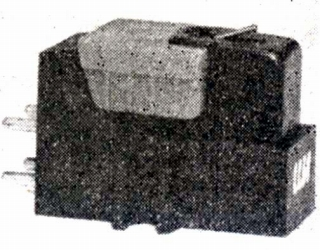
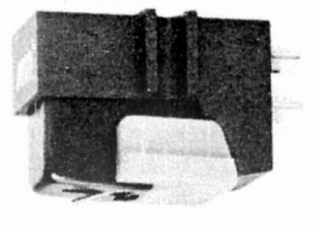
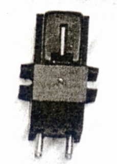

AT-35X



■価格 11,800円
■発電方式 VM型
■出力電圧 5mV/1kHz
5cm/sec
■針圧 0.5〜2.5g（最適
1.5g）
■再生周波数帯域 10-25,000Hz±3dB
■チャンネルセパレーション 30dB/1kHz
■チャンネルバランス ±0.5dB/1kHz
■コンプライアンス 24×10-6cm/dyne
■負荷抵抗 50kΩ
■直流抵抗 1.3kΩ
■インピーダンス 5kΩ/1kHz
■針先 0.3×0.7mil
■自重 6.5g
■交換針 AT35-EL 5,900円 AT35-5D 3,900円
■発売 1966年11月
■販売終了
1974〜1975年頃
■備考 垂直トラッキング角 15度
VM35シリーズ全機種の交換針使用可能
NEW
TYPEは1971年6月発売（旧タイプの交換針がAT35-5D）
改良機種であるAT-VM35が発売された際に、同機の新開発の交換針
を使用可能なように、小変更されたのが「NEW
TYPE」
テクニカでは、旧タイプのAT-35Xの改造を無償で行った。
価格は1973年頃のもの
シェル付きのU型モデル（+800円）あり
テクニカのインデックスへ